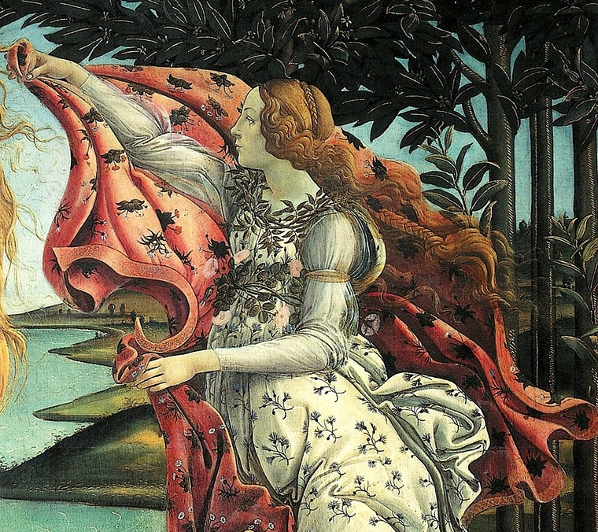

|  |
| Del lado derecho de la obra se encuentra Flora tambien conocida como Primavera una de las tres Horas o gracias, diosas de las estaciones encargadas de recibir a los nuevos dioses. Es diosa de la primavera, que con un manto intenta cubrir la desnudez de Venus. |
| 1 | 2 | 3 | 4 | 5 | 6 |
| GALERÍA | |||||